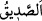

fiil için kullanılmıştır. Arapça’da neredeyse iyi ve öğülen fiil için hiç kullanılmaz.
100. Şimdi artık bizim ne şefaatçilerimiz var.
Mü’minlerin meleklerden ve peygamberlerden şefaatçileri olduğu gibi bizim şefaat
edicilerken kimsemiz yok.
101. Ne de yakın bir dostumuz.
Mü’minlerin dostlarının görüldüğü gibi bizim şefkatli, merhametli ve sevecen bir
dostumuz yok.
“ sevgisinde sana sâdık /doğru olan kimsedir. “ insanın özel yakını ve
dostudur. “ kişinin özel çevresi ve yakınları anlamınadır. Nitekim Fethu’r-
Rahmân’da böyle geçmektedir.
Râğıb der ki: “ müşfik ve yakın demektir. Sanki o yakınlarını himaye etmek için
kızıp öfkelenen kimse demektir. İnsanın husûsî yakınlarına ve dostlarına “ denir.”
Kâşifî der ki: “Kûtü’l-kulûb’da şöyle denir: “ aslında “ idi. Mahreçlerin
yakınlığı sebebiyle “hâ”yı “he”ye dönüştürmüşler. “, ihtimâm’dan alınmıştır. O gün
(kıyamet gününde), kâfirlerin işlerine ihtimam gösterecek ve dostluk şartını yerine
getirecek bir yardımcı, arkadaş/dost olmayacak.”
Şefaatçiler genellikle çok olduğundan âyette de çoğul kullanılmıştır. Görmez misin
sultan birine öfkelendiğinde bazen büyük bir topluluk o kimse namına şefaatçı ve aracı
olur. Nitekim dost az bulunduğundan tekil olarak getirilmiştir. Hiç olmadığı da söylense
çok uzak bir ihtimal olmazdı.
Sâib der ki:
Dostun kıtlığının çekildiği şu dönemde
Külün sönerken ateşe göz kırpmasına şaşarım
Bazı haberlerde şöyle rivâyet edilmiştir: “Kıyamet gününde bir kul getirilir ve
hesaba çekilir. İyilikleri ve kötülükleri eşit olur. Hasımlarını razı edecek bir haseneye
ihtiyaç duyar. Bunun üzerine Allah: “Kulum senin bir haseneye ihtiyacın kaldı. O
olursa/onu bulursan seni cennete koyarım. Git bak, insanlardan iste, belki biri sana
bir hasene bağışlar.” buyurur.